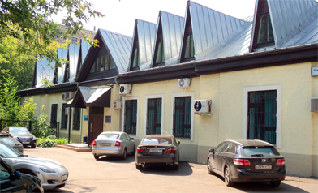

Наши координаты
Электронная почта: connect@terra-socionika.ru
Телефоны: +7 (905) 537-53-08 - директор Центра (Бескова Любовь Анатольевна).
Наш адрес: Москва, Чапаевский переулок, дом 6, 2 этаж, офис 9.
Как проехать:
Проезд до станции м. Сокол. Выход в город по указателю "Ленинградский проспект, 75". Идти от м. Сокол вдоль Ленинградского проспекта в сторону центра около 300 метров, перед Чапаевским парком свернуть направо в Чапаевский переулок, третий дом справа по ходу движения – небольшой двухэтажный особняк.
Подняться на второй этаж по лестнице, офис №9 (дверь напротив лестницы). Вы на месте.
Время в пути – 7-8 минут пешком (около 500 метров от метро).

На охране можно сказать, что вы идёте в Центр прикладной соционики. Пропуск для прохода не нужен.
Карта проезда: